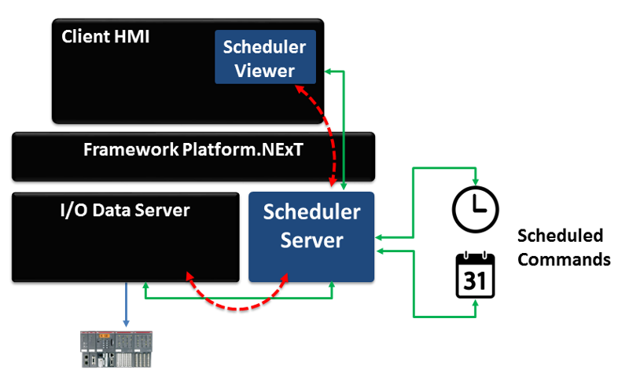

Projects:
Scheduler Server (CSI 2470- Intro to Computer Networks)
- Designed and developed a server application to schedule and manage tasks such as reminders and alarms.
-
Implemented functionality to notify clients when tasks were due and allow updates or deletions of events.
-
Gained experience in client-server communication, event management, and system design.

AP Computer Science Principles Performance Exam
- Created an interactive game demonstrating computational thinking, program design, and problem-solving.
- Applied algorithmic logic, abstraction, and data management to implement key features.
- Produced documentation explaining program functionality, data handling, and programming concepts.